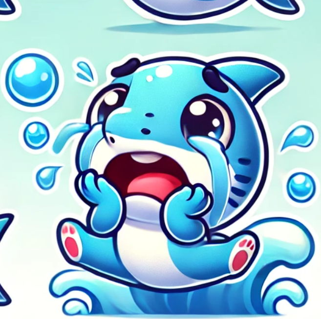

Reins → Récifs coralliens
Le savais-tu ?

Bon fonctionnement
Reins : Une bonne filtration maintient l'équilibre des liquides et des électrolytes, permettant au corps de fonctionner efficacement.
Récifs coralliens : Ils filtrent l'eau et servent de nurseries pour de nombreuses espèces marines, soutenant la biodiversité et la productivité des océans.
C'est SUPER ça !

Mauvais fonctionnement
Reins : Un dysfonctionnement peut entraîner des problèmes comme l’insuffisance rénale, l’accumulation de toxines et des déséquilibres hydriques.
Récifs coralliens : Leur dégradation réduit la capacité de filtration et l’habitat disponible, provoquant une baisse de la biodiversité et une détérioration de la qualité de l'eau.
Oh non ça fait peur
